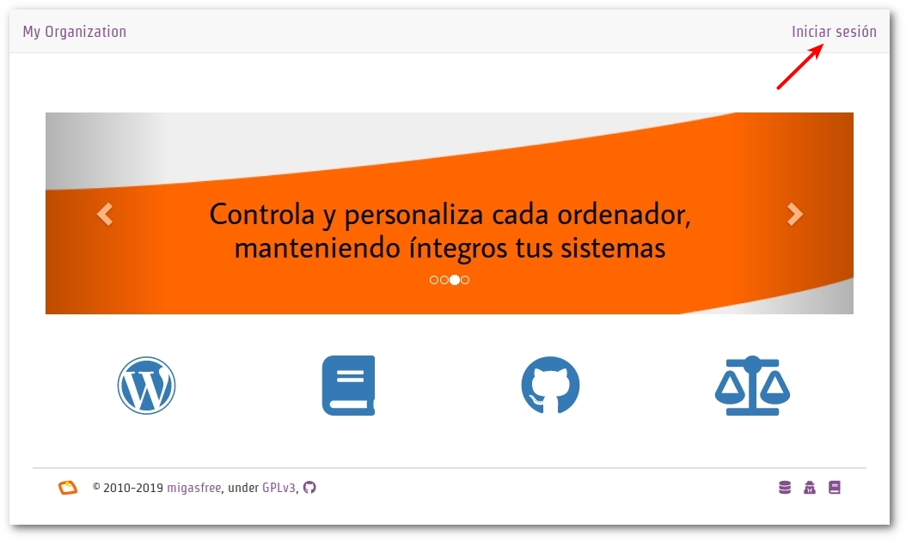
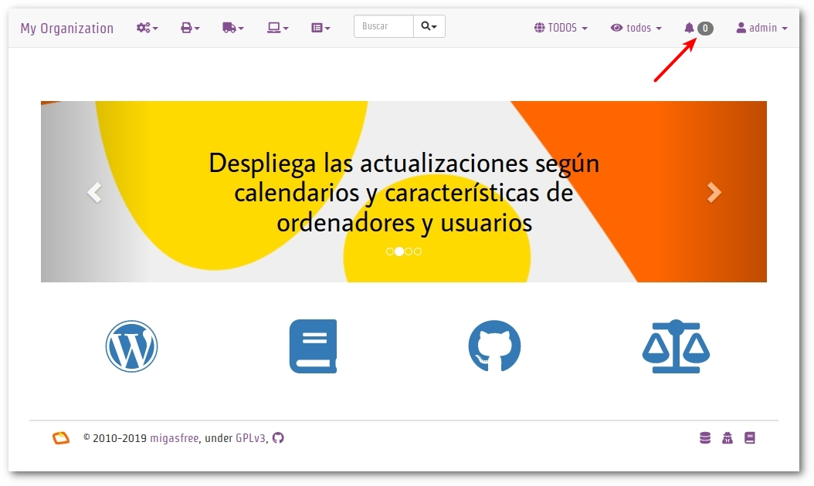
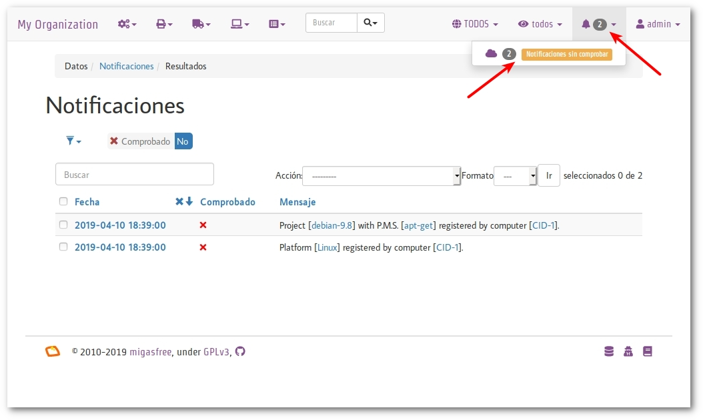
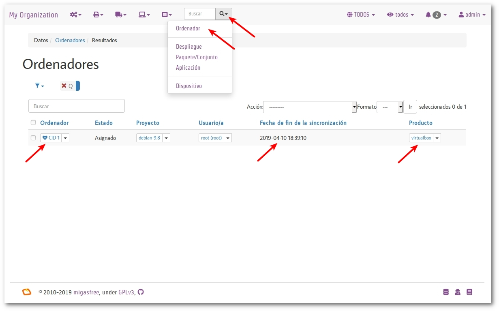

PARTE 2
PRIMEROS PASOS
Probando migasfree
La unidad es la variedad, y la variedad en la unidad es la ley suprema del universo.
-- Isaac Newton.
El objetivo de este capítulo es que dispongas rápidamente de un servidor y un cliente migasfree totalmente funcional, por eso no me voy a extender en explicaciones.
nota
Usa una máquina virtual de virtualbox realizando la instalación mínima por red de Debian 64 bits para ver el funcionamiento de migasfree y familiarizarte con él antes de poner a Migasfree en producción
Instalando el servidor
Si ahora no quieres preocuparte de cómo se realiza esta instalación, nunca has usado docker o, simplemente, quieres avanzar más rápido, te proporcionamos este Open Virtual Appliance (OVA) para que lo ejecutes con virtualbox. Contiene un servidor migasfree ya instalado.
Con virtualbox instalado, y una vez descargado el fichero OVA, haz doble click en él y, a continuación, observa las siguientes reglas de reenvío de puertos accediendo al menú de virtualbox: configuración-red-avanzadas-reenvío de puertos:
Nombre Protocolo IP anfitrión Puerto IP invitado Puerto invitado
======= ========= ============ ====== == ======== ===============
Rule 1 TCP 127.0.0.1 2222 10.0.2.15 22
Rule 2 TCP 127.0.0.1 8080 10.0.2.15 80
Ya puedes arrancar la máquina virtual.
Los usuarios y contraseñas de esta máquina virtual son: tux:tux y root:root.
Para acceder por SSH a esta máquina virtual usa:
ssh -p 2222 tux@127.0.0.1
Una vez dentro, puedes loguearte como root de la siguiente manera:
tux@migasfree:~$ su
Para acceder al servidor web instalado en esta máquina virtual, usa la URL http://127.0.0.1:8080 desde el equipo anfitrión.
Ahora bien, si quieres hacer la instalación tú mismo, accede a la máquina debian 64 bits sobre la que vas a instalar el servidor y sigue los pasos indicados en migasfree-docker.
Comprobando el servidor
En un navegador web accede a la URL del servidor. Si todo ha ido bien, verás algo similar a la imagen 'Acceso al servidor migasfree'.
 Acceso al servidor migasfree
Pulsa en iniciar sesión y haz login con el nombre de usuario "admin"
y contraseña "admin". Verás algo parecido a la imagen 'Estado del
servidor con 0 alertas'. Observa como arriba a la derecha pone
alertas 0. Esto nos indica que todo está controlado.
 Estado del servidor con 0 alertas
Instalando el cliente
Instalando el paquete migasfree-client
Ahora instala el cliente migasfree sobre la misma máquina donde has
instalado el servidor. Para ello, actualiza la lista de paquetes e
instala el paquete migasfree-client:
# wget -O - http://migasfree.org/pub/install-client | bash
También puedes instalar el cliente en cualquier otra máquina y editar el
fichero /etc/migasfree.conf manualmente para configurarlo. Descomenta
la línea # Server = localhost y asígnale la dirección del servidor
web. Te hago notar que esta no es la manera en que debemos hacerlo,
pero por ahora puede servirnos. La manera correcta sería empaquetar
dicha modificación, cosa que veremos más adelante en
Configurando migasfree-client
nota
Cualquier cambio en la configuración de las aplicaciones o del S.O se podrán realizar de manera centralizada con suma facilidad, manteniendo además la integridad, sólo si dicha configuración ha sido empaquetada.
Registrando el cliente
Ejecuta el comando:
# migasfree -u
te devolverá una salida parecida a esta:
root@migasfree:/home/tux# migasfree -u
Sesión gráfica no detectada
Versión de migasfree client: 4.15
Opciones de ejecución: /etc/migasfree.conf
Proyecto: debian-9.3
Servidor: localhost
Actualizar paquetes automáticamente: True
Proxy: None
Certificado SSL: None
Proxy caché de paquetes: None
Depuración: False
Nombre del ordenador: migasfree
GUI detallado: True
PMS: apt-get
Usuario gráfico: root
Autoregistrando ordenador...
¡Clave /var/migasfree-client/keys/localhost/debian-9.3.pri creada!
¡Clave /var/migasfree-client/keys/localhost/server.pub creada!
Warning: apt-key output should not be parsed (stdout is not a terminal)
¡Clave /var/migasfree-client/keys/localhost/repositories.pub creada!
******************* Conectando al servidor migasfree... ********************
***************************** Correcto
************************ Obteniendo propiedades... *************************
***************************** Correcto
************************** Evaluando atributos... **************************
PCI: 8086:1237~Host bridge: Intel Corporation 440FX - 82441FX PMC [Natoma] (rev 02) ,8086:7000~ISA bridge: Intel Corporation 82371SB PIIX3 ISA [Natoma/Triton II] ,8086:7111~IDE interface: Intel Corporation 82371AB/EB/MB PIIX4 IDE (rev 01) ,80ee:beef~VGA compatible controller: InnoTek Systemberatung GmbH VirtualBox Graphics Adapter ,8086:100e~Ethernet controller: Intel Corporation 82540EM Gigabit Ethernet Controller (rev 02) ,80ee:cafe~System peripheral: InnoTek Systemberatung GmbH VirtualBox Guest Service ,106b:003f~USB controller: Apple Inc. KeyLargo/Intrepid USB ,8086:7113~Bridge: Intel Corporation 82371AB/EB/MB PIIX4 ACPI (rev 08) ,8086:2829~SATA controller: Intel Corporation 82801HM/HEM (ICH8M/ICH8M-E) SATA Controller [AHCI mode] (rev 02) ,
HST: migasfree
NET: 10.0.2.0/24
************************** Subiendo atributos... ***************************
***************************** Correcto
*************************** Ejecutando fallas... ***************************
LOW_HOME_PARTITION_SPACE:
LOW_SYSTEM_PARTITION_SPACE:
**************************** Subiendo fallas... ****************************
***************************** Correcto
************************* Creando repositorios... **************************
***************************** Correcto
************* Obteniendo los metadatos de los repositorios... **************
Ign:1 http://ftp.es.debian.org/debian stretch InRelease
Obj:2 http://security.debian.org/debian-security stretch/updates InRelease
Obj:3 http://ftp.es.debian.org/debian stretch-updates InRelease
Obj:4 http://ftp.es.debian.org/debian stretch Release
Obj:5 https://download.docker.com/linux/debian stretch InRelease
Leyendo lista de paquetes... Hecho
***************************** Correcto
************************ Desinstalando paquetes... *************************
***************************** Correcto
******************* Instalando paquetes obligatorios... ********************
***************************** Correcto
************************* Actualizando paquetes... *************************
DEBIAN_FRONTEND=noninteractive /usr/bin/apt-get -o APT::Get::Purge=true -o Dpkg::Options::=--force-confdef -o Dpkg::Options::=--force-confold -o Debug::pkgProblemResolver=1 --assume-yes --force-yes --allow-unauthenticated --auto-remove dist-upgrade
Leyendo lista de paquetes...
Creando árbol de dependencias...
Leyendo la información de estado...
Calculando la actualización...
0 actualizados, 0 nuevos se instalarán, 0 para eliminar y 0 no actualizados.
***************************** Correcto
****************** Subiendo el inventario del software... ******************
***************************** Correcto
*************** Capturando información sobre el hardware... ***************
***************************** Correcto
**************** Enviando información sobre el hardware... ****************
***************************** Correcto
************************* Operaciones completadas **************************
Comprobando el estado del servidor
Comprueba los datos que se han recogido accediendo al servidor con tu navegador web.
-
Fíjate ahora que tienes 2
Alertas(ver imagen notificaciones). Pulsa sobre ellas y luego sobre2 alertas por comprobar:- La primera te notifica que el ordenador
CID-1ha dado de alta la plataformaLinux. - La segunda notificación te dice que el ordenador
CID-1ha añadido el proyectodebian-x.x.
- La primera te notifica que el ordenador
 Notificaciones
-
Echa un vistazo rápido al ordenador pulsando en la
lupay luego enordenador(ver imagen Ordenadores)- Observa los datos del ordenador pulsando sobre
CID-1. - Fíjate en la fecha de la sicronización.
- Consulta el
hardwarepulsando sobre el campoproducto.
- Observa los datos del ordenador pulsando sobre
 Ordenadores
nota
CID es un acrónimo de Computer IDentificator. Es un número que el
servidor asigna a cada ordenador para identificarlo. Es imposible
tener dos ordenadores con el mismo CID.
nota
El símbolo que aparece a la izquierda del CID (el corazón) indica el
estado en el que encuentra el ordenador.
¡Enhorabuena! Has instalado un servidor migasfree y has registrado en él tu primer ordenador.
Desplegando software
Y ahora, para ir abriendo boca, vamos a instalar y eliminar aplicaciones de manera centralizada usando el servidor migasfree.
Supón que quieres sustituir nano por vim en todos los equipos de tu
organización.
Accede a Liberación - Despliegues y pulsa en en símbolo + para
añadir un despliegue.
nota
Sitúa el cursor sobre los iconos del formulario de despliegue para identificar cada campo.
Introduce los siguientes datos:
Nombre: sustituir nano por vimproyecto: (el que corresponda)paquetes a instalar: vimpaquetes a desinstalar: nanoatributos incluidos: ALL SYSTEMS
Graba el despliegue.
Ahora sincroniza el equipo cliente con el servidor migasfree:
# migasfree -u
Puedes comprobar en la salida estándar del cliente migasfree que se ha
configurado el repositorio sustituir-nano-por-vim y que se ha
instalado el paquete vim y desinstalado nano.
************* Obteniendo los metadatos de los repositorios... **************
Obj http://localhost sustituir-nano-por-vim InRelease
Des:1 http://localhost sustituir-nano-por-vim/PKGS amd64 Packages [29 B]
************************ Desinstalando paquetes... *************************
Los siguientes paquetes se ELIMINARÁN:
nano*
***************************** Correcto
******************* Instalando paquetes obligatorios... ********************
Se instalarán los siguientes paquetes NUEVOS:
vim
***************************** Correcto
nota
En el despliegue que acabamos de hacer sólo hemos dado la orden de
instalar y desinstalar paquetes, pero además se ha creado un
repositorio de paquetes vacío. En los siguientes capítulos
aprenderás a subir tus propios paquetes al servidor e introducirlos en
los despliegues, pero vayamos despacito, suave, suavecito.
Al poner el atributo SET-ALL SYSTEMS estamos indicando que se aplique
este despliegue a todos los ordenadores. Podríamos haber incluido otros
atributos como CID-1, NET-10.0.2.0/24, o una lista de ellos. Sólo se
aplicará este despliegue a los ordenadores que tengan algún atributo
coincidente con los atributos incluidos en el despliegue.
Observa que también puedes excluir ordenadores. El servidor sigue la siguiente lógica: primero comprueba los ordenadores incluidos y después excluye los ordenadores que tenga algún atributo que coincida con los atributos excluidos del despliegue.
nota
Ahora cada vez que un ordenador se sincroniza con el servidor (y se le
aplica este despliegue), se instala vim y desinstala nano si es
necesario.
Si ahora queremos instalar vim y emacs en todos los ordenadores,
pon sus nombres en paquetes a instalar y deja en blanco
paquetes a desinstalar:
paquetes a instalar: vim emacspaquetes a desinstalar:
Conforme los equipos se vayan sincronizando, se producirán los cambios.
Aprenderás más sobre los despliegues en el capítulo dedicado a La Liberación.
¡Enhorabuena de nuevo! Ya sabes como instalar/desinstalar software de manera centralizada a un conjunto de ordenadores. No está nada mal para empezar, ¿no crees?
En el siguiente capítulo vas a aprender a hacer el cambio de configuración software al estilo migasfree.